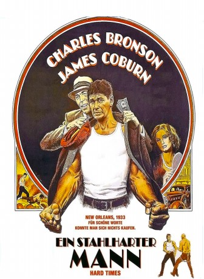

#5733 Ein Stahlharter Mann
Alternativ: Hard Times
 
 IMDB-Wertung: 7.3 / 10
IMDB-Wertung: 7.3 / 10  Metascore: 0
Metascore: 0 
Charles Bronson als Chaney, der Boxer, der mit bloßen Fäusten kämpft. Um die große Wirtschaftskrise besser zu überstehen, schließt er sich mit einem herumziehenden Spieler zusammen, der für ihn illegale Preiskämpfe organisieren soll. Diese Art Kämpfe, die von Korruption durchdrungen sind, schaffen aber leider neue Probleme: im Sport und auch mit Lucy, seiner neuen Freundin.
Jahr: 1975
Dauer: 93 Minuten
FSK: 16
Land: USA Studio: Columbia PicturesTonspuren: DTS - ,
Untertitel:
Auflösung: 1080p (1920x816) Größe: 5918 MB
Genre: Drama, Krimi, Sport
Regisseur:  Walter Hill
Walter Hill
Drehbuch: Steve Lewis
Soundtrack:
Darsteller:
 Charles Bronson als Chaney
Charles Bronson als Chaney James Coburn als Speed
James Coburn als Speed Jill Ireland als Lucy Simpson
Jill Ireland als Lucy Simpson- Strother Martin als Poe
- Margaret Blye als Gayleen Schoonover
- Michael McGuire als Gandil
 Bruce Glover als Doty
Bruce Glover als Doty Robert Tessier als Jim Henry
Robert Tessier als Jim Henry Nick Dimitri als Street
Nick Dimitri als Street Frank McRae als Hammerman
Frank McRae als Hammerman- Naomi Stevens als Madam
 Fred Lerner als Caesare's Hitter
Fred Lerner als Caesare's Hitter Chuck Hicks als Speed's Hitter
Chuck Hicks als Speed's Hitter Walter Scott als Poolplayer
Walter Scott als Poolplayer Bob Minor als Zack
Bob Minor als Zack Brion James als (uncredited
Brion James als (uncredited Felice Orlandi als Le Beau
Felice Orlandi als Le Beau- Edward Walsh als Pettibon
- Maurice Kowalewski als Caesare
- Lyla Hay Owen als Waitress
- John Creamer als Apartment Manager
- Robert Castleberry als Counterman
- Becky Allen als Poe's Date
- Joan Kleven als Carol
- Anne Welsch als Secretary
- Jimmy Nickerson als Barge Fighter
- Max Kleven als Poolplayer
- Valerian Smith als Handler
- Larry Martindale als Driver
- Charles W. Schaefer Jr. als Card Player
- Leslie Bonano als Card Player
- Ronnie Philips als Cajun Fighter
- Greater Liberty Baptist Church Choir and Congregation als
- Laura Misch Owens als Prostitute , uncredited
Datei: X:\1975\Stahlharter Mann, Ein (1975, FSK16, 1920x816).mkv seit 16.03.2017
Festplatte: HD 1971-1979
 Es gibt insgesamt 27 Filme in der Gruppe '1975'
Es gibt insgesamt 27 Filme in der Gruppe '1975'